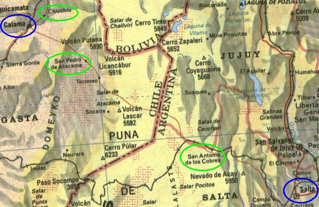

← anterior | principal | próxima →

Logo após sair de Salta, indo em direção a Santo Antonio de Los Cobres, pegamos a primeira estrada não asfaltada. Ela beira montanhas, passando por um vale (feio, apenas pedras).
A estrada é estreita e as curvas são fechadas e o detalhe é que ali passam caminhões grandes também, então há placas sinalizando para que você sempre buzine na curva para avisar quem vem do outro lado sua existência.
Têm também uns riozinhos que descem das montanhas e cruzam a estrada, mas não são fundos, o carro passa tranqüilo.
Após andar um pouco por esta estrada você já vai se deparar com o primeiro cactus da viagem. Os cactus parecem estar apenas em regiões de transição, pois no deserto mesmo não vimos mais.
Mais a frente, o verde aos poucos vai dando lugar ao amarelo, e nesse caminho, tem muita coisa pra tirar foto, montanhas de várias cores, fazendinhas no meio do nada, vales e vegetação de lugares semi-áridos.
Todo esse trecho estava em asfaltamento, é capaz que no ano de 2001 ele esteja todo asfaltado já. É uma pena, pois a estrada natural faz parte do cenário e ajuda a ampliar a sensação de lugar desolado, afastado da civilização. O asfalto corta isso.
Cidadezinha pequena e amistosa. É bom passar um dia nela para ir se acostumando com a altitude que aqui é de 3.750 metros. O que se tem para fazer lá é passear, olhar, sentir. Tanto a paisagem quanto a população.
Foi nosso primeiro contato com a população andina (note na foto o boné da menina, outros brasileiros tinham passada por lá), que é muito simpática. Subimos um morro pequeno de onde dá pra ver toda a cidade, andamos pelas ruas e fomos passear de carro e entrar numa roubada (ver abaixo).
Outra coisa interessante da cidade é que como raramente chove (se chove...) têm muitas casas onde as paredes são uma espécie de barro, e como a areia retém o calor por bastante tempo, nos telhados, é colocada uma camada grossa de areia, para ajudar a combater o frio de noite, quando a temperatura cai muito.
Pegamos uma estradinha para conhecer as redondezas da cidade, e numa determinada altura, resolvemos pegar uma estrada desativada que acabava no pé de uma montanha. Um carro normal não passaria, mas isso não seria problema, já que estávamos com um 4x4. Ledo engano...
Tinha muitos arbustos na estrada e num deles o escapamento (que era encaixado) ficou. Resultado: foram os 2 manés aqui pra baixo do carro tentar reencaixar o maldito.
Assim que deitamos com as ferramentas pra fazer o serviço, o impossível aconteceu: CAIU UMA CHUVA DE GRANIZO NO DESERTO! dá pra acreditar? Pois é, foi só os Curitibanos chegarem lá pra trazer junto a chuva.
A foto massa que mostra os pedacinhos de gelo batendo no carro está com a Sílvia, tenho que pegar com ela. O que tenho aqui é da gente na lama embaixo do carro tentando fixar a parada. Interessante é que também tiramos foto da montanha antes e depois da chuva, e aí dá pra sentir o poder dela.
Ao voltar pra cidade, um xaxixero reapertou o escapamento, colocando pontos novos de fixação (não adiantou, veja a seguir)
Na saída de Santo Antonio, um impasse. Chegou a nós a notícia que havia chovido a madrugada toda nas montanhas e a estrada estava interrompida. Fomos na "gendameria" (onde ficam os policiais militares) e nos disseram que apenas caminhões e carros 4x4 passariam.
Assim sendo, após muita discussão, resolvemos que iríamos todos na Toyota, e o corsa ficaria ali em Santo Antonio. Mas como iríamos nos separar das mulheres dali alguns dias, iria ser um problema para elas voltarem lá buscar o carro.
De última hora, elas resolveram arriscar e meter o corsinha na estrada. Sábia decisão, chegamos no trecho interrompido e levou cerca de uma hora para as máquinas limparem a estrada e passarmos. O corsa passou sem problema. Nunca acredite na gendameria :)
Começamos agora a cruzar os andes em direção ao chile. O visual é impressionante, com várias montanhas por toda parte. Cerca de 30 km após Santo Antonio de Los Cobres, está o ponto mais alto da travessia, a 4560 km de altitude!!! A parada para foto com a placa é obrigatória :)
Um pouco a frente encontramos ali no meio do nada, um rebanho(?) de llamas, solto, sem cercado, na beira da estrada. É claro, paramos para olhar.
A Lissandra desceu do carro pra ir tirar uma foto mais de perto. A llama não gostou muito de ter sua intimidade registrada e deu um corridão nela! Foi hilário, mas ao mesmo tempo ficamos apreensivos pois a llama podia ter atropelado ela, sei lá, o bicho é grande. Ela correu pra dentro do carro.
Com a movimentação, as outras llamas vieram ver o que estava acontecendo e rapidamente estávamos com os dois carros cercados por várias llamas! Foi muito legal, no nosso primeiro contato com o bicho, já pudemos ver vários, e bem de perto.
Aí começou a sessão, passamos a mão, demos comida nutritiva como bolacha recheada e torrones pra elas :), tiramos fotos, aquela coisa de turista. O pelo delas é BEM grosso, todo embolado. E o bicho fede. Lembra camelo, tem aquela cara engraçada com aqueles olhos gigantes.
Não sei se eram mesmo llamas, pois tem llama, guanaco, vicunha e alpaca, que são todos meio parecidos, mas llama é mais simpático :)
FRONTEIRA ARGENTINA-CHILE É uma placa.
Agora que já cruzamos o cume dos andes, a diversão é outra: o deserto. Areia tomou conta da paisagem e estamos cercados de NADA por todos os lados.
É uma sensação nova, de solidão e poder ao mesmo tempo, naquele lugar distante, não há a quem chamar, o próximo carro passará provavelmente dali um hora ou mais, você está sozinho, mas por estar cruzando aquele deserto solitário, você se sente forte, desbravador, é uma sensação muito boa.
O sol, o vento forte, a areia, o nada e você. É uma integração com a natureza, você se sente parte da paisagem, muito massa.
25 km após a fronteira, está o posto da aduana chilena. Toda comida perecível do carro deve ser comida ANTES de chegar até aqui. Perdemos um salame e maçãs :)
Bem na frente da aduana tem um lago azul com alguns flamingos.
Continuando a viagem, mais deserto, nada e lagunas. Com certeza, este é o melhor trecho da viagem.
Chegamos ao nosso destino primário, a cidadezinha de San Pedro de Atacama, encravada no meio do deserto do Atacama.
É uma cidade bem atípica. Pequena, mas como é a base e ponto de partida para todas as atrações turísticas próximas, nela se encontram turistas do mundo todo, quando fomos, principalmente alemães. E devido a isso, tem coisas geralmente não encontradas em cidades pequenas, como um bar onde se pode navegar na internet! Isso mesmo, no meio do deserto você pode mandar um e-mail pra família e avisar que está tudo bem.
Tem também um museu muito massa, que fala da história da população andina e tem uma múmia também, custa 1.200 pesos a entrada.
Ah! E aqui você já pode degustar a bebida chilena mais massa que existe: o "néctar de durazno". É envasado pela coca-cola (que comprou a ANDINA, empresa criadora da bebida), então tem distribuição garantida em cada canto do país.
é doce e consistente. Imagina pegar aquela lata massa de pêssegos em calda e jogá-la inteira no liquidificador. Depois tome a parada. É igual.
Até trouxemos umas garrafas de 2 litros pro Brasil, mas chegaram aqui fermentadas, ruins :(
Nessa viagem fomos movidos a torrones argentinos arcor e néctar de durazno chilenos :)
É bem perto da cidade e é uma escavação arqueológica visitável onde dá pra ver as construções antigas, uma espécie de aldeia com as casas todas grudadas e interligadas.
Há também no local uma reconstrução utilizando materiais do local, de uma cabana.
Passeamos pelo local e no chão encontramos pedaços de pedra trabalhada, galhos secos e uma espécie de "coquinhos" ou coisa assim...
Indescritível, a parte mais animal e pira que visitamos no deserto.
O nome Vale da Lua é justo por que o local realmente parece que não faz parte desse planeta, pois o tipo das montanhas é muito estranho, todas diferentes, com cores diferentes, formações bizarras, e tudo concentrado na mesma área, um monte de montanhas e dunas, se atravessando, você nem sabe direito pra onde olhar, é tudo massa.
Subimos numa duna gigantesca, que serve de acesso a uma montanha, onde de seu topo dá pra se ter uma visão geral do local, e dali pode-se caminhar até as outras montanhas.
Uma coisa que é também muito massa ali é o pôr-do-sol. Ver aquele sol batendo nas montanhas, de repente fica tudo frio e escuro, pô, é um troço demais, não tem como explicar, tem que ir lá e ver.
Não tem muito o que falar. O lugar é massa pra caralho e pronto.
Fomos visitar um outro lugar perto do Vale da Lua, tem sal espalhado pelo chão, brilha com o sol, muito massa.
Na volta, com a trepidação da estrada, o escapamento que o argentino xaxixero de Santo Antonio de Los Cobres tinha arrumado, se soltou de novo, e desta vez raspou muito no chão e amassou. Tentamos colocar de volta, mas não deu, então o tiramos.
Voltamos a San Pedro, e fomos numa oficina, que era um show a parte, um monte de lixo, peças de carros e motos, tudo espalhado pelo local, com os filhos do cara brincando no meio da bagunça. E o cara, com a maior cara de "la garantia soy yo". Como não tínhamos muito a perder, estrangeiros com o carro estragado, não dava pra recusar.
Bem, o cara simplesmente olhou o escapamento e falou: "vou tirar toda essa parte e SOLDAR tudo numa peça só, direto no chassi". Bem, seria isso ou nada. A gente se olhou, duvidou, pensou que diabos estávamos fazendo ali, mas seguindo a filosofia que no final tudo sempre acaba bem, deixamos o cara soldar tudo.
Improvisando ele fez uns suportes na hora e meteu solda no bichinho. Não posso reclamar, o escapamento está até hoje firme na Toyota :)
De escapamento "novo", seguimos até Calama, e depois até chiu chiu (palavras repetidas significam plural na língua indígena), um vilarejo ao norte.
Perto de chiu chiu tem o vale de lasana, onde em meio o uma cadeia de montanhas, passa um riozinho e a vida cresce ao redor dele, com fazendas e plantações ali em meio ao nada. Muito massa. Vale a pena ir até lá.
Voltando a chiu chiu, tem uma igreja bem antiga pra visitar, e lugar pra comprar bugigangas.
EL TATIO E OS GÊISERS Mas nossa ida a chiu chiu foi basicamente um ponto de descanso até El Tatio, o lugar onde tem os gêisers que brotam do chão, espirrando jatos de água fervente a até (dizem) 6 metros de altura.
Saímos de chiu chiu às 5 da manhã, acordar foi foda. A estradinha até El Tatio é lazarenta, com trechos estreitos e sem sinalização, e como tem que chegar bem cedo pra ver os gêisers, atravessamos essa estradinha ainda no escuro, com nevoeiro, e um frio do caralho. Foi estressante.
100 km depois, chegamos em El Tatio, já tinham altas vans com turistas lá e tinha até uma kombi azul e vermelha com pneus finos! Quem disse que é difícil chegar até lá? :)
O lugar é ultra estranho, de uns buracos no chão saem os jatos, o maior que vimos nem tinha 1 metro. Fica uma névoa até umas 8 da manhã, depois o sol toma conta.
É interessante, mas não é tudo o que pintam. Valeu pelo caminho pra chegar até lá.
Na volta a San Pedro, por outro caminho, vimos bastante montanhas com o pico nevado, massa.
Depois visitamos o salar de Atacama, onde a entrada é paga.
É estranho (pra variar). O chão é cheio de cristais de sal, misturados com terra ou coisa assim, ficando escuro. Tem uns bichos lá como lagartos e ratos (ou algo parecido), e tem flamingos (bicho boiola) lá também.
Não há muito o que ver, é isso.
Então a hora fatídica chegou, após 7 dias viajando juntos, nos separamos das mulheres e seu corsa macho. Elas subiram até iquique e depois voltaram a Curitiba, pelo mesmo caminho que viemos.
Eu e o MarcioMan continuamos nossa saga indo para o sul, em direção à Santiago.
De San Pedro, fomos até Calama.
Há alguns dias o carro estava chato para pegar, e altas vezes precisávamos empurrá-lo e pegar no tranco, mas agora estava de um jeito que ou arrumávamos o problema ou ficaríamos estressados.
Acho que levamos o carro na oficina mais cara de Calama, a reptal, mas não tem do que reclamar, os caras foram bem atenciosos e não tentaram nos empurar a solução mais cara assim de cara.
Foi constatado lá que a nossa bateria já era, estava sem poder de carga. Na verdade, os manés aqui esqueceram de olhar o nível da água destilada. Sabe como é, muito tempo com bateria seca desacostuma olhar... Aí grudou os contatos e fodeu...
Até deixamos a bateria lá na oficina a noite toda carregando pra ver se dava pra chegar pelo menos até o *Brasil com ela. Mas não teve jeito...
Tivemos que comprar uma nova. Justo lá, que era tudo caro. Resultado, desembolsamos 100 dólares (190 reais pelo câmbio da época) numa bateria que aqui no Brasil pagaríamos cerca de 80 reais*. Fazer o quê, turista tem dessas né...
Mas como todo problema, tem o lado bom. Ainda na oficina, precisávamos ir a algum hotel, pois não estava em nossos planos posar lá. íamos para um que tinha no guia, mas o técnico chefe da oficina nos avisou que era muito caro. Então achamos outro e aquele ele disse que era bom e barato, o john keny, na avenida ecuador, 1991.
Aí beleza, estávamos saindo para pegar o táxi quando um carinha que também estava na oficina arrumando o carro disse que estava indo exatamente para aquele hotel falar com alguém lá e que podia nos dar uma carona. Não é muita coincidência??? Também achamos, mas aceitamos, com o pé atrás.
A propósito, gostaríamos de agradecê-lo aqui publicamente, seu nome é alex, tem um nissan placa pc-9851 e trabalha numa mina de cobre ali perto, Chuquicamata, a maior mina a céu aberto do mundo. No caminho ele nos contou coisas sobre ela. Muito massa.
Já que tínhamos que ficar lá em Calama marcando, fomos dar uma volta e foi legal. Para uma cidade no meio do deserto, até que era bem desenvolvida. Vimos de tudo: colegiais, pânquis, metaleiros, camelôs, bóis... e na volta ainda se matamos de jogar fliperama que lá era bem barato. E é claro, reabastecemos nosso estoque de néctar :)